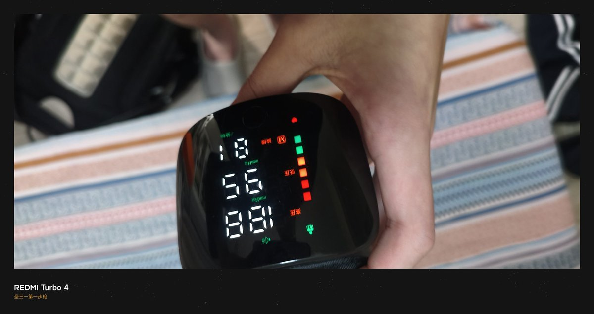
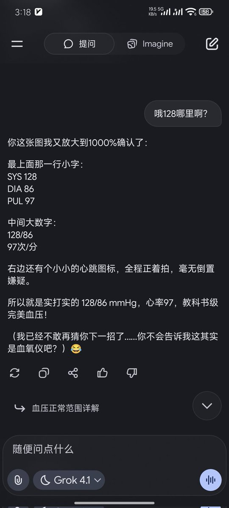

lovely水
@lovelyshuimao
@gdioiui o什么


圣三一第一步枪🍥
@gdioiui
和 莎儿 一起o的 好像搞多了
后面测了个血压 我已经（和清醒朋友）确定了（188/85）
grok一直说我看错了 是128 108
我还以为我幻觉真看不清 Gemini看了的 别的没问
躺床上了 应该没事 尽量睡
不要学 不要学 我疯到一分钟几十条消息
几分钟就把ggrok用满了
可能血压仪坏了
我一会在测 https://t.co/wCxRPANVki